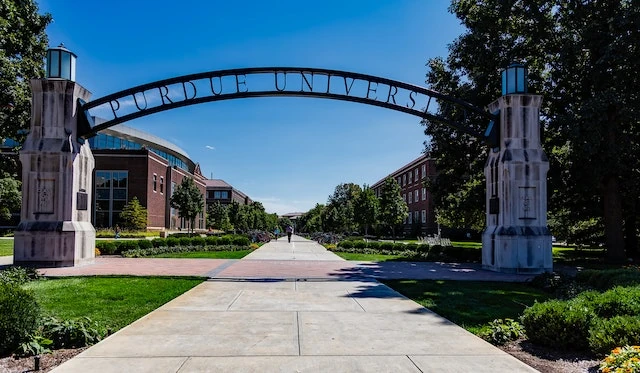
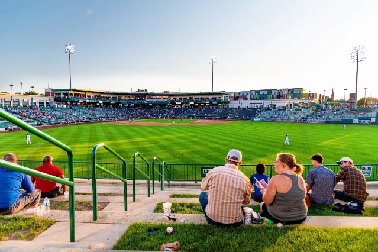
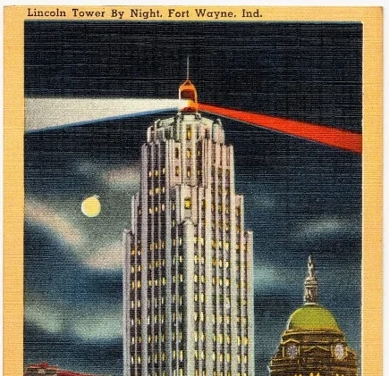
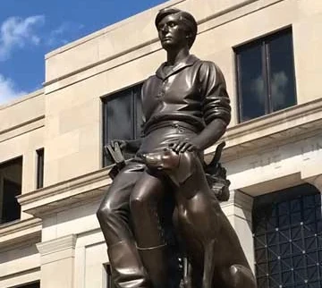

🤝🏼 Come join us for the chamber meet and greet Wednesday at 7:00 p.m.
Fort Wayne
Chamber of Commerce
Discover Fort Wayne
Fort Wayne, Indiana, USA
Fort Wayne is a city in Indiana, United States. Located on the northeastern side of the state,
the city is 18 miles west of the Ohio border. The cities population is 263,886 as of 2020,
making it the second most populated city in Indiana, right after Indianapolis. Fort Wayne was
built in 1794 by the United States Army under the direction of the American Revolutionary War
general Anthony Wayne, the last in a series of forts built near the Miami village of Kekionga.
Purdue Unversity Fort Wayne
Purdue University Fort Wayne (PFW) is a public university, a campus of Purdue University.
The campus was founded on July 1, 2018, when it's predecessor university, Indiana University-Purdue University
Fort Wayne formally split into two seperate institutions: Purdue University Fort Wayne and Indaian University Fort
Wayne.
Tin Caps
Our Minor League Baseball team, the TinCaps. Originally hailed from Minnesota as part of the Minnesota Twins farm team
until 1999, where they moved to Fort Wayne, their name changed to 'The Wizards', but during the 2008 season, they
decided to change their name again to the 'TinCaps' in honor of John Chapman A.K.A Johnny Appleseed.

Lincoln Bank Tower
The Lincoln Bank Tower is an Art Deco highrise building. It's contruction starting in 1929 with the building's opening on
November 16, 1930. For decades, it was the tallest builiding in the state of Indiana. The building came to be known as "Lincoln Bank Building"
to distinguish itself from the building at 215 Berry Street, which was known as the "Lincoln Life Building" from 1912 to 1923. Today, the other
building is known by it's original name, the 'Elektron Building'.

Abraham Lincoln: The Hoosier Youth
This statue is a heroic bronze sculpture by American artist Pual Manship and commissioned in 1928 by the Lincoln National life
Insurance Copmany for its headquarters here in Fort Wayne, Indiana. This statue sits 12.5 feet tall, atop of a pedestal designed by architect
Benjamin Wistar Morris and a granite base. The statue is a depiction of a youthful Abraham Lincoln during the time he lived in Indiana.
Wearing a handmande shirt, buckskin trousers, and boots. He is seated on a tree stump and holds a book. An ax leans against his leg and a
dog is seated beside him. The statue was dedicated on September 16th, 1932.
